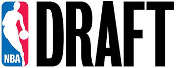

If you are playing college basketball you are most likely very talented to and considering playing professionally. Therefore, you are now under the National College Athletic Association (NCAA). The NCAA oversee college athletes by giving them college "benefits" such as scholarships and tuition. Most likely you were able to get into college through a scholarship as physical recognition of your basketball skills. But if you're thinking of playing professionally, this is not the end of the road for you. You're now considering playing for the National Basketball Association (NBA). To do so, you have to commit to the NBA draft.
Your committment to the NBA Draft is a very risky decision. Doing so, you are gambling your livelihood to 60 NBA picks (2 Rounds, 30 picks). Also the sad thing is once you commit yourself to the NBA Draft is that the NCAA will not take you back. So if you do not get into one of the 60 slots you have three main options: The G-League, playing international, or commit to a profession that does not involve a college education. If you are interested in making basketball apart of your career (other than playing) consider being a basketball coach.
| Number of College Athletes | Percentage of College Athletes who Commit to NBA Draft | Percentage of College Athletes who are Drafted to NBA Draft | Percentage of College Athletes who go Undrafted |
|---|---|---|---|
| 18,712 | 22.2% (4,158) | 1.2% (50) | 21.0% (4,108) |
| Source: NCAA |